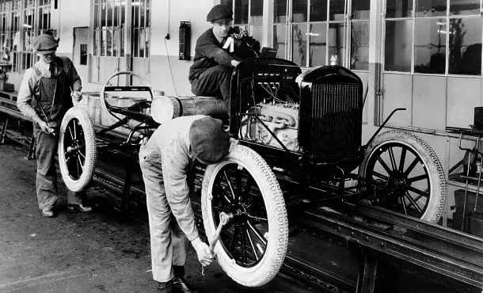
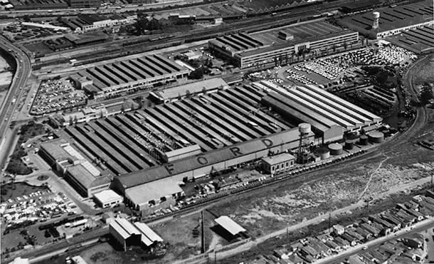

Conheça a história completa da Ford: como Henry criou o fordismo
A Ford é uma das montadoras de automóveis mais conhecidas do mundo. Fundada pelo americano Henry Ford, a empresa mudou a indústria automobilística e fabricou alguns dos modelos mais conhecidos da história. Atualmente os carros da empresa continuam sendo muito procurados em todo o mundo, e o Brasil não é exceção.
Por viver com sua família em uma fazenda, Ford desde pequeno observava os equipamentos ali presentes e pensava em maneiras de aliviar o grande esforço que as pessoas faziam por meio das máquinas. E esse pensamento nunca saiu da cabeça dele, a mobilidade como uma solução para muitas necessidades humanas.
Buscando unir o útil ao agradável, Henry sempre buscou trabalhar em locais onde ele pudesse colocar suas habilidades de engenharia em prática. Joalherias e fábricas de motores foram alguns dos locais onde ele conseguiu os primeiros empregos.
Mas uma ocupação que foi muito importante para o desenvolvimento das habilidades de Ford foi na Edison Illuminating Company, do inventor da lâmpada elétrica Thomas Edison. Ali, além de ter contato com diversos equipamentos avançados presentes na usina, ele possuía uma pequena oficina onde podia pesquisar e criar seus próprios projetos.
O que é fordismo?
Para colocar suas ambiciosas ideias em prática, Henry Ford precisava de um sistema de trabalho diferente em suas fábricas. Isso porque na época, os carros eram fabricados de maneira artesanal, levando bastante tempo para ficarem prontos.
Querendo unir velocidade de produção com um baixo custo de mão de obra, ele pensou em um sistema que posteriormente seria chamado de fordismo.
O fordismo funcionava da seguinte forma: a montagem dos veículos seria feita em uma linha de montagem, onde cada trabalhador teria uma função específica apenas. Dessa forma a empresa diminuía as chances de erro e também não precisava de trabalhadores com qualificação para o serviço.


História da Ford no Brasil
Visando conquistar outros mercados ao redor do mundo, a Ford começa os planos para a produção de carros em solo brasileiro em 1950 e em 1953 inaugura a Fábrica do Ipiranga, localizada em São Paulo. O projeto chamou muita atenção pois podia comportar mais de 2.500 empregados e ter a capacidade de produzir cerca de 125 carros por dia.
O primeiro veículo totalmente brasileiro foi o Ford F-600, um caminhão de carga que foi um grande marco da industrialização em nosso país. Aos poucos a montadora iniciou a produção de outros modelos no Brasil, passando por tratores e chegando aos veículos familiares que trilharam o caminho para o catálogo que temos hoje.